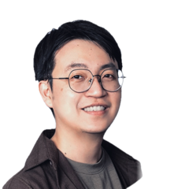
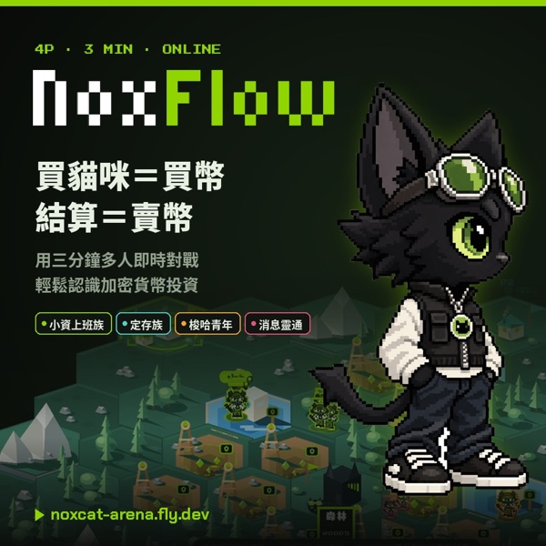
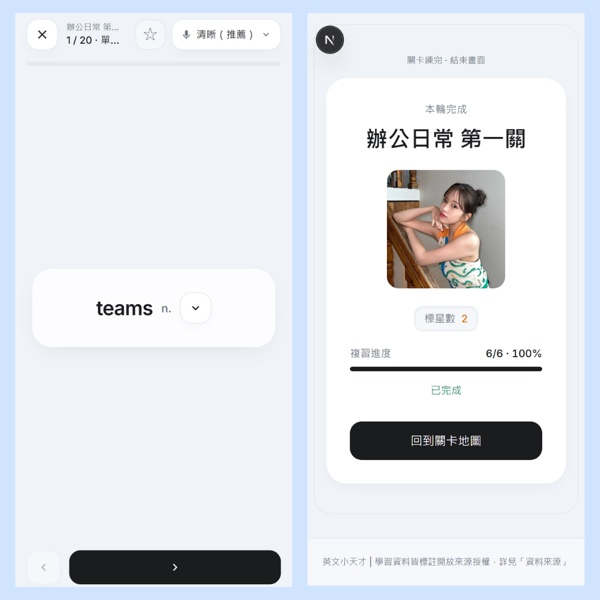
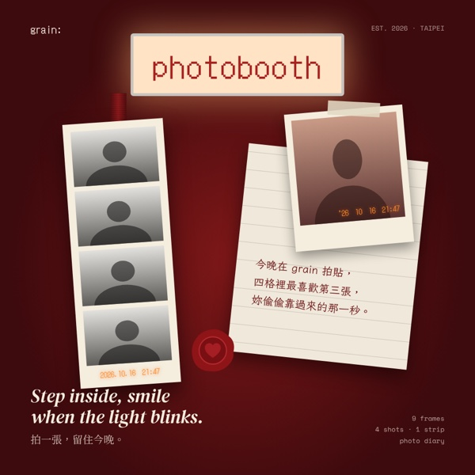
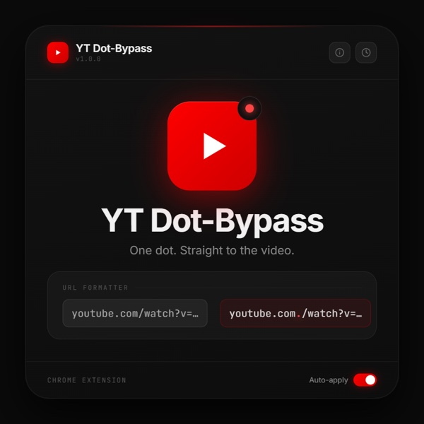
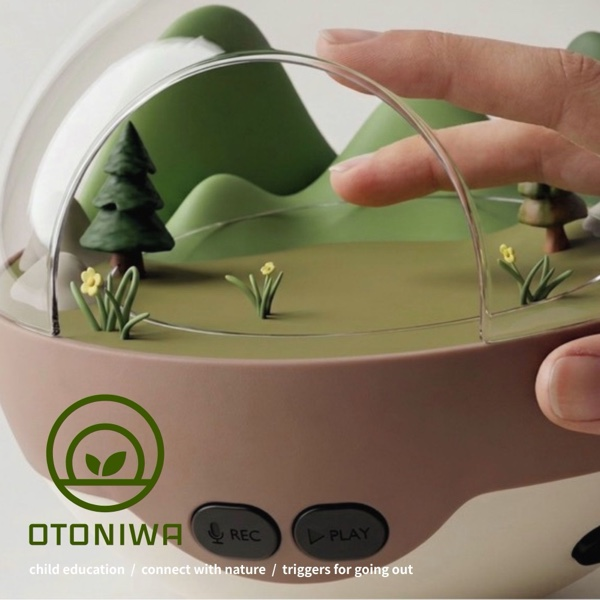
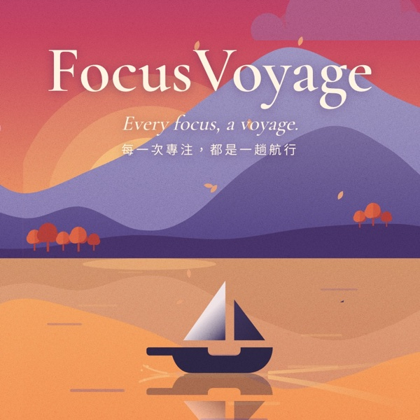
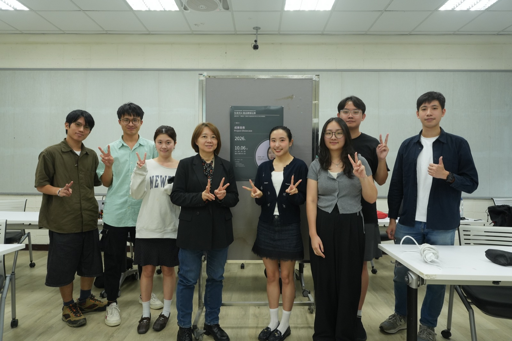

陳靜儀老師
北科大工業設計系專任助理教授
115 年度研發處補助｜創新研究與技術發展成長社群
國立臺北科技大學 · 生成式 AI 產品開發社群
探索成果第二年延續 AI Agent 的主軸，聚焦 vibe coding：不必從零寫程式，而是用自然語言和 AI 一來一往，把設計系統、Web 產品到無人機飛控，一步步做成可以操作的成果。
工作坊與成果發表
業界與學界講師
累計實作時數
北科大工業設計系專任助理教授

噢評股份有限公司產品設計
虎尾科大資訊工程系專任教授
從設計系統、vibe coding 到動手試飛。
以「從 Product Designer 到 Product Builder」為核心，探討 AI 時代產品設計師的角色轉變——設計師不應止於構想，更要親手實現價值。剖析傳統「設計—開發」的溝通輪迴，以及 AI 快速開發後產品難以收斂、無法維護的問題，說明如何以設計系統與產品元件庫同時化解。介紹用邏輯指揮 AI 寫出好程式的 AI Builder 心法與 Cursor 操作，並實作 Figma 變數與程式碼同步，將設計規範轉換成 AI 能理解的 Design Tokens，建立專案的視覺基石。
延續上午建立的 Design Tokens 進入元件實作。學員在 Cursor 中指揮 AI 快速建立 UI 元件，從基礎元件到 Storybook 文件，親手打造可重複使用的數位設計資產。進一步設定 Figma MCP，讓 Cursor 直接連接設計檔、精準讀取元件結構、間距與色彩變數，AI 不再靠截圖猜測，大幅提升開發還原度。最終每位學員完成一個完全對應設計系統的 Storybook 元件庫。
以 vibe coding 工具的實際應用為主題。工作坊先介紹 vibe coding 的概念與工具，再透過三階段天氣預報為主題的任務操作，讓學員以 Bolt.new 和 Figma Make 用自然語言描述需求，一步步把想法生成為可以操作的產品原型，並在過程中反覆調整。最後進行訪談，請學員分享操作 vibe coding 的心得與遇到的困難，作為後續研究與產品開發的參考。
以 MiniFly 教材為主軸，從「飛機為什麼會飛」談起。比較白努利、康達效應與牛頓第三運動定律三種升力解釋，並透過吹風機與紙片、對著罐子吹蠟燭、水柱與乒乓球等康達實驗，親眼看見氣流如何貼附曲面產生升力。接著進入飛行控制實務，認識副翼、升降舵與方向舵的作用；學員動手摺出 Nakamura 與 AeroBat 紙飛機，剪出舵面、調整角度，挑戰丟出後用手接回飛機，體會「轉彎容易、飛直困難」的控制要領。
下午進入動力飛行。從聯合航空 DC-10 液壓全失、僅靠引擎推力差迫降的案例，說明推力控制飛機（PCA）的原理：MiniFly 以左右馬達推力差轉向，並以感測器即時維持平衡。學員組裝 MiniFly 動力模組，搭配紙飛機、珍珠板或以 TinkerCAD 建模的 3D 列印機身，透過手機遙控到戶外試飛、微調方向舵。最後以 vibe coding 請 AI 協助開發飛控韌體，用 Arduino 燒錄進 MiniFly，再依試飛結果持續與 AI 討論修改。
學員實作成果的展示與交流，作為整個系列工作坊的總結與驗收。學員將工作坊所學的設計系統、vibe coding 與 AI 工具，應用於各自的產品開發，發表以 vibe coding 完成的產品原型，主題橫跨專注陪伴 App、加密貨幣教育遊戲、背單字 App、線上拍貼機、影片工具與親子自然教育產品。透過互動討論與意見交流，檢視彼此的學習成果，吸取不同的設計思路與技術應用方式。
每件作品都從一句需求開始。

NOXFLOW 是一款讓新手輕鬆認識加密貨幣的多人即時對戰遊戲。召喚貓咪就是買幣、結算就是賣幣，玩家要在三分鐘內看準新聞與價格波動，和最多四名玩家搶資產。四種職業對應定期定額、質押、梭哈與資訊優勢等真實投資策略，賽後復盤再把每一步操作翻譯成金融概念。遊戲已正式上線，手機與電腦都能一鍵配對、即開即玩。
開啟作品
這是一個自製的背單字 Web app，能夠讓學習者輕易在各個零碎的時間背單字，每個單字都包含中英文翻譯、詞性、兩句例句。除了具有良好的學習功能外，此 app 還有一個特色在於可以自定義每單元的單字封面圖，當學習者一次次的進行複習該回內容，封面圖將越來越清晰，進而引發學習者的學習動機及興趣。總而言之，英文小天才是一款能夠協助學習者以輕鬆、輕量的方式，在日常中漸漸培養英文能力的優質工具！
開啟作品
grain: photobooth 把街角的復古拍貼機搬進瀏覽器。拉上簾子、按下快門，系統會自動倒數連拍；九款版型從吊牌、愛心雙拍到打字機剪報，只要點選圖片就能挑選。拍完可以替相框換色、寫下一段日記，拍攝日期與時間會像底片戳記一樣印在照片上，最後合成高解析圖檔帶走，把每一次相聚都留成可以收藏的回憶。
開啟作品
YouTube 第三方廣告阻擋器時常失效，於是我自己做了 YT Dot-Bypass：貼上影片網址，它會自動修改網址，讓影片改走 DNS 根網域載入，輕鬆略過廣告，還能便利地一鍵在新分頁開啟。轉換紀錄保存在使用者本機，也內建意見回饋，串接 Google 試算表收集想法。前端用 Figma Make 打造，後端由 Claude Code 完善；介面走深色幽默風，畢竟繞過廣告是有點偷雞摸狗的行為。
開啟作品
Otoniwa 是一款結合聲音收集與實體擺飾的親子自然教育產品。我們預測了 2036 年，數位化生活會讓人越來越少走出戶外，身邊的自然聲音也會逐漸消失。孩子可以用 App 錄下戶外的蟲鳴、鳥叫和環境聲，在 App 裡設計專屬的生態瓶，再和家長一起組裝成實體作品，按下按鍵就能重新聽到錄下的聲音。作品結合視覺、聽覺與觸覺，讓孩子重新發現身邊的聲音與故事，走出戶外、親近自然。
開啟作品
專注常常是一件孤單、又看不見成果的事。FocusVoyage 把它化為一趟航行：設定時間就是起航，專注的每一分鐘化成一海里，時間到便靠岸，抵達一座小島。我以四季與晨昏變化的湖景營造沉靜的陪伴，再用金幣勳章、航海地圖與好友明信片，讓累積被看見、讓堅持有了溫度。希望每個人放下手機的那一刻，都能安心出海。
開啟作品
本年度社群以 vibe coding 為主軸，從 AI 驅動的設計系統、vibe coding 工具應用到無人機飛控開發，學員在一系列工作坊中親手把想法做成可以操作的產品原型，並於成果發表中完成展示。
3 位學員通過 iPAS「AI 應用規劃師」檢定（共 6 位報考）
回顧 2025 第一年